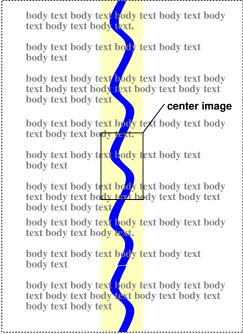
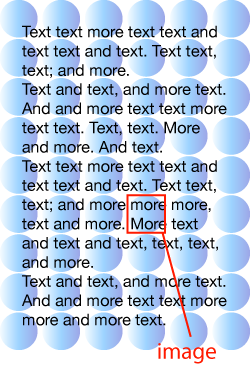
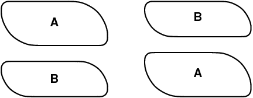

CSS is a language for describing the rendering of structured documents (such as HTML and XML) on screen, on paper,
in speech, etc. This draft contains the features of CSS level 3 relating
to borders and backgrounds. It includes and extends the functionality of
CSS level 2 [CSS21], which builds on CSS level 1
[CSS1]. The main
extensions compared to level 2 are borders consisting of images, boxes
with multiple backgrounds, boxes with rounded corners and boxes with
shadows.
This module replaces two earlier drafts: CSS3 Backgrounds and CSS3
Border.
Status of this document
This is a public copy of the editors' draft. It is provided for
discussion only and may change at any moment. Its publication here does
not imply endorsement of its contents by W3C. Don't cite this document
other than as work in progress.
The (archived) public
mailing list
www-style@w3.org (see instructions) is preferred for
discussion of this specification. When sending e-mail, please put the text
“css3-background” in the subject, preferably like this:
“[css3-background] …summary of comment…”
The following features are at-risk and may be dropped at the end of the
CR period if there has not been enough interest from implementers:
animatability of ‘box-shadow’
The CSS WG maintains an issues list for
this module. A test suite
and implementation report for CSS Backgrounds and Borders Level 3 will be
developed during the Candidate Recommendation phase, which will last a
minimum of three months, and at least until 25 July 2012. See the section
“CR exit criteria” for more details.
The changes to this specification since the previous drafts are listed
in the “Changes” section.
1. Introduction
This subsection is not normative.
When elements are rendered according to the CSS box model[CSS21], each
element is either not displayed at all, or formatted as one or more
rectangular boxes. Each box has a rectangular content area, a band of
padding around the content, a border around the padding, and a margin
outside the border. (The margin may actually be negative, but margins have
no influence on the background and border.)
The various areas and edges of a typical box. (This
diagram is explained in the CSS2.1 Box Model chapter [CSS21].)
The properties of this module deal with the decoration of the border
area and with the background of the content, padding and border areas.
Additionally the box may be given a "drop-shadow" effect with the ‘box-shadow’ property.
If an element is broken into multiple boxes, ‘box-decoration-break’ [CSS-BREAK-3] defines how the
borders and background are divided over the various boxes. (An element can
result in more than one box if it is broken at the end of a line, at the
end of a column or at the end of a page; and continued in the next line,
column or page.)
The relative stacking order of backgrounds, borders, and shadows is
given in this module. For how these layers interact with other rendered
content, see Appendix E “Elaborate description of Stacking Contexts”
in [CSS21].
The <image> value type is
defined by this specification as <image> =
<uri>. Other value types are defined in CSS
Level 2 Revision 1 [CSS21]. Other CSS modules may expand
the definitions of these value types: for example [CSS3COLOR], when combined with
this module, expands the definition of the <color> value type as
used in this specification. Similarly, [CSS3-IMAGES], when combined
with this module, expands the definition of <image> as used in this
specification.
In addition to the property-specific values listed in their definitions,
all properties defined in this specification also accept the inherit
keyword as their property value. For readability it has not been repeated
explicitly.
2.3. Animated Values
It is expected that CSS will include ways to animate transitions between
styles. (The section “Animation
of property types” of the CSS Transitions module [CSS3-TRANSITIONS] is
expected to define how different kinds of values are interpolated during a
transition.) In anticipation of that, this module includes a line
“Animatable” for each property, which specifies whether and how values
of the property can be animated.
3. Backgrounds
Each box has a background layer that may be fully transparent (the
default), or filled with a color and/or one or more images. The background
properties specify what color (‘background-color’) and images (‘background-image’) to use, and how they are
sized, positioned, tiled, etc.
The background properties are not inherited, but the parent box's
background will shine through by default because of the initial ‘transparent’ value on ‘background-color’.
3.1. Layering Multiple Background
Images
The background of a box can have multiple layers in CSS3. The number of layers is determined by the
number of comma-separated values in the ‘background-image’ property. Note that a value
of ‘none’
still creates a layer.
Each of the images is sized, positioned, and tiled according to the
corresponding value in the other background properties. The lists are
matched up from the first value: excess values at the end are not used. If
a property doesn't have enough comma-separated values to match the number
of layers, the UA must calculate its used value by
repeating the list of values until there are enough.
For example, this set of declarations:
background-image: url(flower.png), url(ball.png), url(grass.png);
background-position: center center, 20% 80%, top left, bottom right;
background-origin: border-box, content-box;
background-repeat: no-repeat;
has exactly the same effect as this set with the extra position dropped
and the missing values for ‘background-origin’ and ‘background-repeat’ filled in (emphasized for
clarity):
background-image: url(flower.png), url(ball.png), url(grass1.png);
background-position: center center, 20% 80%, top left;
background-origin: border-box, content-box, border-box;
background-repeat: no-repeat, no-repeat, no-repeat;
The first image in the list is the layer closest to the user, the next
one is painted behind the first, and so on. The background color, if
present, is painted below all of the other layers.
Note that the border-image
properties can also define a background image, which, if present, is
painted on top of the background created by the background properties.
This property sets the background image(s) of an element. Images are
drawn with the first specified one on top (closest to the user) and each
subsequent image behind the previous one. Where
A value of ‘none’ counts as an image layer but draws nothing.
An image that is empty (zero width or zero height), that fails to
download, or that cannot be displayed (e.g., because it is not in a
supported image format) likewise counts as a layer but draws nothing.
When setting a background image, authors should also specify a ‘background-color’
that will preserve contrast with the text for when the image is
unavailable.
For accessibility reasons, authors should not use background images as
the sole method of conveying important information. See Web
Content Accessibility Guideline F3[WCAG20]. Images are not accessible
in non-graphical presentations, and background images specifically might
be turned off in high-contrast display modes.
Note that stylistic foreground images can be provided in CSS
with the content
property. (Semantically-important foreground images should be provided in
the document markup, e.g. with the <img> tag in HTML.)
Media fragments
can be used to display a portion of an image. The CSS Images module will
provide fallback syntax for image formats and include additional controls
for image display.
Some examples specifying background images:
body { background-image: url("marble.svg") }
p { background-image: none }
div { background-image: url(tl.png), url(tr.png) }
Implementations may optimize by not downloading and drawing
images that are not visible (e.g., because they are behind other, fully
opaque images).
Single values for <repeat-style> have the
following meanings:
‘repeat-x’
Computes to ‘repeat no-repeat’.
‘repeat-y’
Computes to ‘no-repeat repeat’.
‘repeat’
Computes to ‘repeat repeat’.
‘space’
Computes to ‘space space’
‘round’
Computes to ‘round round’
‘no-repeat’
Computes to ‘no-repeat no-repeat’
If a <repeat-style>
value has two keywords, the first one is for the horizontal direction, the
second for the vertical one, as follows:
‘repeat’
The image is repeated in this direction as often as needed to cover
the background painting area.
‘space’
The image is repeated as often as will fit within the background positioning area without
being clipped and then the images are spaced out to fill the area. The
first and last images touch the edges of the area. If the background
painting area is larger than the background positioning area, then
the pattern repeats to fill the background painting area. The value of
‘background-position’ for this direction is
ignored, unless there is not enough space for two copies of the image in
this direction, in which case only one image is placed and ‘background-position’ determines its position
in this direction.
‘round’
The image is repeated as often as will fit within the background positioning area. If it
doesn't fit a whole number of times, it is rescaled so that it does. See
the formula under ‘background-size’. If the background
painting area is larger than the background positioning area, then
the pattern repeats to fill the background painting area.
‘no-repeat’
The image is placed once and not repeated in this direction.
Unless one of the two keywords is ‘no-repeat’, the whole background painting area will be
tiled, i.e., not just one vertical strip and one horizontal strip.
Example(s):
body {
background: white url("pendant.png");
background-repeat: repeat-y;
background-position: center;
}

The effect of ‘repeat-y’: One copy of the background image is
centered, and other copies are put above and below it to make a vertical
band behind the element.
Example(s):
body {
background-image: url(dot.png) white;
background-repeat: space
}

The effect of ‘space’:
the image of a dot is tiled to cover the whole background and the images
are equally spaced.
If background images are specified, this property specifies whether they
are fixed with regard to the viewport
(‘fixed’) or scroll along
with the element (‘scroll’) or its contents (‘local’). The property's value is given as a
comma-separated list of <attachment> keywords where
<attachment> = scroll | fixed | local
fixed
The background is fixed with regard to the viewport. In paged media
where there is no viewport, a ‘fixed’ background is fixed with respect to the page box and
therefore replicated on every page. Note that there is
only one viewport per view. Even if an element has a scrolling mechanism
(see the ‘overflow’ property [CSS21]), a ‘fixed’ background doesn't
move with the element.
local
The background is fixed with regard to the element's contents: if the
element has a scrolling mechanism, the background scrolls with the
element's contents, and the background painting area and
background positioning
area are relative to the scrollable area of the element rather
than to the border framing them. Because the scrollable area does not
include the border area, for scrollable elements the ‘border-box’ value of ‘background-clip’ may be treated the same as
‘padding-box’.
scroll
The background is fixed with regard to the element itself and does not
scroll with its contents. (It is effectively attached to the element's
border.)
Even if the image is fixed, it is still only visible when it is in the
background painting area of the
element or otherwise unclipped. (See
“The backgrounds of special elements” for the cases when
background images are not clipped.) Thus, unless the image is tiled, it
may be invisible.
This example creates an infinite vertical band that remains “glued”
to the viewport when the element is scrolled.
body {
background: red url("pendant.gif");
background-repeat: repeat-y;
background-attachment: fixed;
}
User agents that do not support ‘fixed’ backgrounds (for example due to limitations
of the hardware platform) should ignore declarations with the keyword
‘fixed’. For example:
body {
/* For all UAs: */
background: white url(paper.png) scroll;
/* For UAs that do fixed backgrounds: */
background: white url(ledger.png) fixed;
}
h1 {
/* For all UAs: */
background: silver;
/* For UAs that do fixed backgrounds: */
background: url(stripe.png) fixed, white url(ledger.png) fixed;
}
A list, each item consisting of: a pair of offsets (horizontal and
vertical) from the top left origin each given as a combination of an
absolute length and a percentage
If background images have been specified, this property specifies their
initial position (after any resizing)
within their corresponding background positioning area.
Where
<position> = [
[ left | center | right | top | bottom | <length-percentage> ]
|
[ left | center | right | <length-percentage> ]
[ top | center | bottom | <length-percentage> ]
|
[ center | [ left | right ] <length-percentage>? ] &&
[ center | [ top | bottom ] <length-percentage>? ]
]
If only one value is specified, the second value is assumed to be
‘center’. If two values are given, a length or
percentage as the first value represents the horizontal position (or
offset) and a length or percentage as the second value represents the
vertical position (or offset). <percentage> and
<length> values here represent an offset of the top left
corner of the background image from the top left corner of the background
positioning area.
Note that a pair of keywords can be reordered while a
combination of keyword and length or percentage cannot. So ‘center left’ is valid while ‘50%
left’ is not.
If three or four values are given, then each
<percentage> or<length> represents an
offset and must be preceded by a keyword, which specifies from which edge
the offset is given. For example, ‘background-position:
bottom 10px right 20px’ represents a ‘10px’ vertical offset up from the bottom edge and a
‘20px’ horizontal offset leftward from the
right edge. If three values are given, the missing offset is assumed to be
zero.
Positive values represent an offset inward from the edge of the
background positioning area. Negative values represent an offset
outward from the edge of the background positioning area.
The following declarations give the stated (horizontal, vertical)
offsets from the top left corner:
background-position: left 10px top 15px; /* 10px, 15px */
background-position: left top ; /* 0px, 0px */
background-position: 10px 15px; /* 10px, 15px */
background-position: left 15px; /* 0px, 15px */
background-position: 10px top ; /* 10px, 0px */
background-position: left top 15px; /* 0px, 15px */
background-position: left 10px top ; /* 10px, 0px */
<percentage>
A percentage for the horizontal offset is relative to (width of
background positioning area - width of background
image). A percentage for the vertical offset is relative to
(height of background positioning area - height of
background image), where the size of the image is the size given
by ‘background-size’.
For example, with a value pair of ‘0% 0%’,
the upper left corner of the image is aligned with the upper left
corner of, usually, the box's padding edge. A value pair of ‘100% 100%’ places the lower right corner of the
image in the lower right corner of the area. With a value pair of
‘75% 50%’, the point 75% across and 50% down
the image is to be placed at the point 75% across and 50% down the
area.
Diagram of the meaning of ‘background-position: 75% 50%’.
<length>
A length value gives a fixed length as the offset. For example, with a
value pair of ‘2cm 1cm’, the upper left corner
of the image is placed 2cm to the right and 1cm below the upper left
corner of the background positioning area.
‘top’
Computes to ‘0%’ for the vertical position
if one or two values are given, otherwise specifies the top edge as the
origin for the next offset.
‘right’
Computes to ‘100%’ for the horizontal
position if one or two values are given, otherwise specifies the right
edge as the origin for the next offset.
‘bottom’
Computes to ‘100%’ for the vertical
position if one or two values are given, otherwise specifies the bottom
edge as the origin for the next offset.
‘left’
Computes to ‘0%’ for the horizontal
position if one or two values are given, otherwise specifies the left
edge as the origin for the next offset.
‘center’
Computes to ‘50%’ (‘left
50%’) for the horizontal position if the horizontal position is
not otherwise specified, or ‘50%’ (‘top 50%’) for the vertical position if it is.
The following ‘background’ shorthand declarations use
keywords to set ‘background-position’ to the stated percentage
values.
body { background: url("banner.jpeg") right top } /* 100% 0% */
body { background: url("banner.jpeg") top center } /* 50% 0% */
body { background: url("banner.jpeg") center } /* 50% 50% */
body { background: url("banner.jpeg") bottom } /* 50% 100% */
In the example below, the (single) image is placed in the lower-right
corner of the viewport.
Background positions can also be relative to other corners than the top
left. E.g., the following puts the background image 10px from the bottom
and 3em from the right:
For elements rendered as a single box, specifies the background positioning area. For
elements rendered as multiple boxes (e.g., inline boxes on several lines,
boxes on several pages), specifies which boxes ‘box-decoration-break’ [CSS-BREAK-3] operates on to
determine the background positioning area(s).
‘padding-box’
The position is relative to the padding box. (For single boxes
‘0 0’ is the upper left corner of the padding
edge, ‘100% 100%’ is the lower right corner.)
Note that if ‘background-clip’ is ‘padding-box’, ‘background-origin’ is ‘border-box’, ‘background-position’ is ‘top
left’ (the initial value), and the element has a non-zero border,
then the top and left of the background image will be clipped.
Scale the image, while preserving its intrinsic aspect ratio (if any),
to the largest size such that both its width and its height can fit
inside the background positioning area.
‘cover’
Scale the image, while preserving its intrinsic aspect ratio (if any),
to the smallest size such that both its width and its height can
completely cover the background positioning area.
[ <length-percentage> | auto ]{1,2}
The first value gives the width of the corresponding image, the second
value its height. If only one value is given the second is assumed to be
‘auto’.
A percentage is relative to the background positioning area.
An ‘auto’ value for one dimension is
resolved by using the image's intrinsic ratio and the size of the other
dimension, or failing that, using the image's intrinsic size, or failing
that, treating it as 100%.
If both values are ‘auto’ then the
intrinsic width and/or height of the image should be used, if any, the
missing dimension (if any) behaving as ‘auto’
as described above. If the image has neither an intrinsic width nor an
intrinsic height, its size is determined as for ‘contain’.
Negative values are not allowed.
Here are some examples. The first example stretches the background
image independently in both dimensions to completely cover the content
area:
The second example stretches the image so that exactly two copies fit
horizontally. The aspect ratio is preserved:
p {
background-image: url(tubes.png);
background-size: 50% auto;
background-origin: border-box }
This example forces the background image to be 15 by 15 pixels:
para {
background-size: 15px 15px;
background-image: url(tile.png)}
This example uses the image's intrinsic size. Note that this is the
only possible behavior in CSS level 1 and 2.
body {
background-size: auto; /* default */
background-image: url(flower.png) }
The following example rounds the height of the image to 33.3%, up from
the specified value of 30%. At 30%, three images would fit entirely and a
fourth only partially. After rounding, three images fit. The width of the
image is 20% of the background area width and is not rounded.
If ‘background-repeat’ is ‘round’ for one (or both) dimensions, there is a second
step. The UA must scale the image in that dimension (or both dimensions)
so that it fits a whole number of times in the background positioning
area. In the case of the width (height is analogous):
If X ≠ 0 is the width of the image after step one and
W is the width of the background positioning area, then the
rounded width X' = W / round(W /
X) where round() is a function that returns the nearest
natural number (integer greater than zero).
If ‘background-repeat’ is ‘round’ for one dimension only and if ‘background-size’
is ‘auto’ for the other dimension, then there
is a third step: that other dimension is scaled so that the original
aspect ratio is restored.
In this example the background image is shown at its intrinsic size:
div {
background-image: url(image1.png);
background-repeat: repeat; /* default */
background-size: auto } /* default */
In the following example, the background is shown with a width of 3em
and its height is scaled proportionally to keep the original aspect
ratio:
In the following example, the background is shown with a width of
approximately 3em: scaled so that it fits a whole number of times in the
width of the background. The height is scaled proportionally to keep the
original aspect ratio:
div {
background-image: url(image3.png);
background-repeat: round repeat;
background-size: 3em auto }
In the following example, the background image is shown with a width of
3em and a height that is either the height corresponding to that width at
the original aspect ratio or slightly less:
div {
background-image: url(image4.png);
background-repeat: repeat round;
background-size: 3em auto }
In the following example, the background image is shown with a height
of approximately 4em: scaled slightly so that it fits a whole number of
times in the background height. The width is the approximately the width
that correspond to a 4em height at the original aspect ratio: scaled
slightly so that it fits a whole number of times in the background width.
div {
background-image: url(image5.png);
background-repeat: round;
background-size: auto 4em }
If the background image's width or height resolves to zero, this causes
the image not to be displayed. (The effect is the same as if it had been a
transparent image.)
The ‘background’ property is a shorthand property
for setting most background properties at the same place in the style
sheet. The number of comma-separated items defines the number of
background layers. Given a valid declaration, for each layer the shorthand
first sets the corresponding layer of each of ‘background-image’, ‘background-position’, ‘background-size’, ‘background-repeat’, ‘background-origin’, ‘background-clip’
and ‘background-attachment’ to that property's
initial value, then assigns any explicit values specified for this layer
in the declaration. Finally ‘background-color’ is set to the specified
color, if any, else set to its initial value.
In the first rule of the following example, only a value for ‘background-color’ has been given and the
other individual properties are set to their initial values. In the
second rule, many individual properties have been specified.
body { background: red }
p { background: url("chess.png") 40% / 10em gray
round fixed border-box; }
The following example shows how a both a background color (#CCC) and a background image (url(metal.jpg)) are set. The image is rescaled to the
full width of the element:
E { background: #CCC url("metal.jpg") top left / 100% auto no-repeat}
Another example shows equivalence:
div { background: padding-box url(paper.jpg) white center }
div {
background-color: white;
background-image: url(paper.jpg);
background-repeat: repeat;
background-attachment: scroll;
background-position: center;
background-clip: padding-box;
background-origin: padding-box;
background-size: auto auto }
The following declaration with multiple, comma-separated values
background: url(a.png) top left no-repeat,
url(b.png) center / 100% 100% no-repeat,
url(c.png) white;
is equivalent to
background-image: url(a.png), url(b.png), url(c.png);
background-position: top left, center, top left;
background-repeat: no-repeat, no-repeat, repeat;
background-clip: border-box, border-box, border-box;
background-origin: padding-box, padding-box, padding-box;
background-size: auto auto, 100% 100%, auto auto;
background-attachment: scroll, scroll, scroll;
background-color: white;
3.11. Backgrounds of
Special Elements
The document canvas is the
infinite surface over which the document is rendered. [CSS21] Since no element corresponds
to the canvas, in order to allow styling of the canvas CSS propagates the
background of the root element (or, in the case of HTML, the <body>
element) as described below. However, if no boxes are generated for the
element whose background would be used for the canvas (for example, if the
root element has ‘display: none’), then the
canvas background is transparent.
Note that an element might be invisible, but still generate
boxes. For example, if the element has ‘visibility:
hidden’ but not ‘display: none’, boxes
are generated for it and its background is used for the
canvas.
If the canvas background is not opaque, what shows through is
UA-dependent.
3.11.1. The Canvas
Background and the Root Element
The background of the root element becomes the background of the canvas and
its background painting area extends to cover
the entire canvas. However, any images are sized and positioned relative
to the root element as if they were painted for that element alone. (In
other words, the background
positioning area is determined as for the root element.) The
root element does not paint this background again, i.e., the used value of
its background is transparent.
3.11.2. The Canvas
Background and the HTML <body> Element
For documents whose root element is an HTML HTML
element [HTML401] or an XHTML html element [XHTML11]: if the computed value of
‘background-image’ on the root element is ‘none’ and its ‘background-color’ is ‘transparent’, user agents must instead propagate the
computed values of the background properties from that element's first
HTML BODY or XHTML body
child element. The used values of that BODY
element's background properties are their initial values, and the
propagated values are treated as if they were specified on the root
element. It is recommended that authors of HTML documents specify the
canvas background for the BODY element rather than
the HTML element.
According to these rules, the canvas underlying the following HTML
document will have a “marble” background:
<!DOCTYPE html PUBLIC '-//W3C//DTD HTML 4.0//EN'
>
<html>
<head>
<title>Setting the canvas background</title>
<style type="text/css">
body { background: url("http://example.org/marble.png") }
</style>
</head>
<body>
<p>My background is marble.</p>
</body>
</html>
3.11.3. The ‘::first-line’ Pseudo-element‘s Background
The ‘::first-line’ pseudo-element is like an
inline-level element for the purposes of the background (see
section 5.12.1 of [CSS21]). That means, e.g., that in a
left-justified first line, the background does not necessarily extend all
the way to the right margin.
4. Borders
The border can either be a predefined style (solid line, double line,
dotted line, pseudo-3D border, etc.) or it can be an image. In the former
case, various properties define the style (‘border-style’),
color (‘border-color’), and thickness (‘border-width’) of
the border.
These properties set the foreground color of the border specified by the
border-style properties.
‘Border-color’ is a shorthand for the four
‘border-*-color’ properties. The four values
set the top, right, bottom and left border, respectively. A missing left
is the same as right, a missing bottom is the same as top, and a missing
right is also the same as top.
These properties set the style of the border, unless there is a border image
‘Border-style’ is a shorthand for the other
four. Its four values set the top, right, bottom and left border
respectively. A missing left is the same as right, a missing bottom is the
same as top, and a missing right is also the same as top.
No border. Color and width are ignored (i.e., the border has width
0). Note this means that the initial value of ‘border-image-width’ will also resolve to
zero.
‘hidden’
Same as ‘none’, but has different behavior in the
border conflict resolution rules for border-collapsed tables [CSS21].
‘dotted’
A series of round dots.
‘dashed’
A series of square-ended dashes.
‘solid’
A single line segment.
‘double’
Two parallel solid lines with some space between them. (The thickness
of the lines is not specified, but the sum of the lines and the space
must equal ‘border-width’.)
‘groove’
Looks as if it were carved in the canvas. (This is typically achieved
by creating a “shadow” from two colors that are slightly lighter and
darker than the ‘border-color’.)
Borders are drawn in front of the element's background, but behind the
element's content (in case it overlaps).
Example renderings of the predefined border styles.
Note: Border colors close to black or white may need
different color calculations than colors in between in order to create the
required “3D” effect of ‘groove’, ‘ridge’, ‘inset’, or ‘outset’.
Note: There is no control over the spacing of the dots and
dashes, nor over the length of the dashes. Implementations are encouraged
to choose a spacing that makes the corners symmetrical.
Note: This specification does not define how borders of
different styles should be joined in the corner. Also note that rounded
corners may cause the corners and the contents to overlap, if the padding
is less than the radius of the corner.
4.3. Line Thickness: the
‘border-width’
properties
These properties set the thickness of the border. Where
<line-width> = <length> | thin | medium | thick
The lengths corresponding to ‘thin’, ‘medium’ and ‘thick’ are not
specified, but the values are constant throughout a document and thin ≤ medium ≤ thick. A UA could,
e.g., make the thickness depend on the ‘medium’
font size: one choice might be 1, 3 & 5px when the ‘medium’ font size is 17px or less. Negative
<length> values are not allowed.
‘Border-width’ is a shorthand that sets the
four ‘border-*-width’ properties. If it has
four values, they set top, right, bottom and left in that order. If left
is missing, it is the same as right; if bottom is missing, it is the same
as top; if right is missing, it is the same as top.
Note that the initial width is ‘medium’, but the initial style is ‘none’ and
therefore the used width is 0.
When the used width of the border is 0, we say that the border is
absent.
This is a shorthand property for setting the width, style, and color of
the top, right, bottom, and left border of a box. Omitted values are set
to their initial values.
The ‘border’
property is a shorthand property for setting the same width, color, and
style for all four borders of a box. Unlike the shorthand ‘margin’ and ‘padding’ properties, the ‘border’ property cannot
set different values on the four borders. To do so, one or more of the
other border properties must be used.
The ‘border’
shorthand also resets ‘border-image’ to its initial value. It is
therefore recommended that authors use the ‘border’ shorthand, rather than other
shorthands or the individual properties, to override any border settings
earlier in the cascade. This will ensure that ‘border-image’ has
also been reset to allow the new styles to take effect.
The CSS Working Group intends for the ‘border’ shorthand to
reset all border properties in future levels of CSS as well. For example,
if a ‘border-characters’ property is
introduced in the future to allow glyphs as borders, it will also be reset
by the ‘border’
shorthand. By using the ‘border’ shorthand to reset borders, authors
can be guaranteed a “blank canvas” no matter what properties are
introduced in the future.
For example, the first rule below is equivalent to the set of five
rules shown after it:
p { border: solid red }
p {
border-top: solid red;
border-right: solid red;
border-bottom: solid red;
border-left: solid red;
border-image: none;
}
Since, to some extent, the properties have overlapping functionality,
the order in which the rules are specified is important.
Consider this example:
blockquote {
border-color: red;
border-left: double;
color: black
}
In the above example, the color of the left border is black, while the
other borders are red. This is due to ‘border-left’ setting the width, style, and
color. Since the color value is not given by the ‘border-left’
property, it will be taken from the ‘color’ property. The fact that the ‘color’ property is set after the ‘border-left’
property is not relevant.
Refer to corresponding dimension of the border
box.
Media:
visual
Computed value:
see individual properties
Animatable:
see individual properties
The two length or percentage values of the ‘border-*-radius’ properties define the radii of a
quarter ellipse that defines the shape of the corner of the outer border
edge (see the diagram below). The first value is the horizontal radius,
the second the vertical radius. If the second value is omitted it is
copied from the first. If either length is zero, the corner is square, not
rounded. Percentages for the horizontal radius refer to the width of the
border box, whereas percentages for the vertical radius refer to the
height of the border box. Negative values are not allowed.
The two values of ‘border-top-left-radius: 55pt 25pt’ define the
curvature of the corner.
This example draws ovals of 15em wide and 10em high:
The ‘border-radius’ shorthand sets all four
‘border-*-radius’ properties. If values are
given before and after the slash, then the values before the slash set the
horizontal radius and the values after the slash set the vertical radius.
If there is no slash, then the values set both radii equally. The four
values for each radii are given in the order top-left, top-right,
bottom-right, bottom-left. If bottom-left is omitted it is the same as
top-right. If bottom-right is omitted it is the same as top-left. If
top-right is omitted it is the same as top-left.
The padding edge (inner border) radius is the outer border radius minus
the corresponding border thickness. In the case where this results in a
negative value, the inner radius is zero. (In such cases its center might
not coincide with that of the outer border curve.) Likewise the content
edge radius is the padding edge radius minus the corresponding padding, or
if that is negative, zero. The border and padding thicknesses in the
curved region are thus interpolated from the adjoining sides, and when two
adjoining borders are of different thicknesses the corner will show a
smooth transition between the thicker and thinner borders.
All border styles (‘solid’, ‘dotted’, ‘inset’, etc.) follow the curve of the border.
The effect of a rounded corner when the two borders it
connects are of unequal thickness (left) and the effect of a rounded
corner on borders that are thicker than the radius of the corner (right).
Note that if the center of a corner's outer curve is past an
opposite padding edge (in the border area of a side opposite the corner),
the inner curve will not be a full quarter ellipse.
Where the border-radius curve extends into the opposite
sides' borders, the arc of the padding edge is less than 90°.
The margin edge, being outside the border edge, calculates its radius by
adding the corresponding margin thickness to each border radius.
However, in order to create a sharper corner when the border radius is
small, when the border radius is less than the margin, the margin
is multiplied by the proportion 1 + (r-1)3, where
r is the ratio of the border radius to the margin, in
calculating the corner radii of the margin box shape.
5.3. Corner Clipping
A box's backgrounds, but not its border-image, are clipped to the appropriate
curve (as determined by ‘background-clip’). Other effects that clip to
the border or padding edge (such as ‘overflow’ other than ‘visible’) also must clip to the curve. The content of
replaced elements is always trimmed to the content edge curve.
Also, the area outside the curve of the border edge does not accept
pointer events on behalf of the element.
As ‘border-radius’ reduces the interactive area of
an element authors should make sure the remaining interactive area
conforms to recommended minima for the platforms they target; in
particular, conforming to recommended minimum touch target sizes may
require larger widths and heights when ‘border-radius’ is used.
This example adds appropriate padding, so that the contents do not
overflow the corners. Note that there is no border, but the background
will still have rounded corners.
Color and style transitions must be contained within the segment of the
border that intersects the smallest rectangle that contains both border
radii as well as the center of the inner curve (which may be a point
representing the corner of the padding edge, if the border radii are
smaller than the border-width).
If one of these borders is zero-width, then the other border takes up
the entire transitional area. Otherwise, the center of color and style
transitions between adjoining borders is a point along the curve that is a
continuous monotonic function of the ratio of the border widths. However
it is not defined what these transitions look like or what function maps
from this ratio to a point on the curve.
Given these corner shapes, color and style transitions
must be contained within the green region. In case D the rectangle
defined by the border radii does not include the center of the inner
curve (which is a sharp corner), so the transition region is expanded to
include that corner. Transitions may take up the entire transition
region, but are not required to: For example, a gradient color transition
between two solid border styles might take up only the region bounded by
the tips of the outer radii and the tips of the inner radii (represented
in case D by the dark green region).
5.5. Overlapping Curves
Corner curves must not overlap: When the sum of any two adjacent border
radii exceeds the size of the border box, UAs must proportionally reduce
the used values of all border radii until none of them overlap. The
algorithm for reducing radii is as follows:
Let f =
min(Li/Si), where i
∈ {top, right, bottom, left}, Si is the sum of the
two corresponding radii of the corners on side i, and
Ltop = Lbottom = the width of
the box, and Lleft = Lright =
the height of the box. If f < 1, then all corner radii are
reduced by multiplying them by f.
Note that this formula ensures that quarter circles remain
quarter circles and large radii remain larger than smaller ones, but it
may reduce corners that were already small enough, which may make borders
of nearby elements that should look the same look different.
If the curve interferes with UI elements such as scrollbars, the UA may
further reduce the used value of the affected border radii (and only the
affected border radii) as much as necessary, but no more.
For example, the borders A of the figure
below might be the result of
all corners need to be reduced by a factor 0.8 to make them fit. The
used border radii thus are 0.4em (instead of 0.5em) and 1.6em (instead of
2em). See borders B in the figure.

These rounded corner might be the result of ‘width: 6em; height: 2.5em; border-radius: 0.5em 2em 0.5em
2em’ for A; and ditto but with ‘height:
2em’ for B.
5.6. Effect on Tables
The ‘border-radius’ properties do apply to ‘table’ and ‘inline-table’
elements. When ‘border-collapse’ is
‘collapse’, the UA may apply the border-radius
properties to ‘table’ and ‘inline-table’ elements, but is not required to. In this
case not only must the border radii of adjacent corners not intersect, but
the horizontal and vertical radii of a single corner must not extend past
the far border edges of the cell at that corner (i.e. a table corner's
border-radius does not affect cells not at that corner). If the computed
values of the border radii would cause this effect, then the used values
of all the border radii of the table must be reduced by the same factor so
that the radii neither intersect nor extend past the border edges of their
respective corner cells.
The effect of border-radius on internal table
elements is undefined in CSS3 Backgrounds and Borders, but may be
defined in a future specification. CSS3 UAs should ignore
border-radius properties applied to internal table elements when ‘border-collapse’ is ‘collapse’.
6. Border Images
Authors can specify an image to be used in place of the border styles.
In this case, the border's design is taken from the sides and corners of
an image specified with ‘border-image-source’, whose pieces may be
sliced, scaled and stretched in various ways to fit the size of the border image area. The border-image
properties do not affect layout: layout of the box, its content, and
surrounding content is based on the ‘border-width’ and ‘border-style’
properties only.
This example creates a top and bottom border consisting of a whole
number of orange diamonds and a left and right border of a single,
stretched diamond. The corners are diamonds of a different color. The
image to tile is as follows. Apart from the diamonds, it is transparent:
The image is 81 by 81 pixels and has to be divided into 9 equal parts.
The style rules could thus be as follows:
The result, when applied to a DIV of 12 by 5em, will be similar to
this:
This shows a more complicated example, demonstrating how the border
image corresponds to the fallback border-style but can also extend beyond
the border area. The border image is a wavy green border with an extended
corner effect:
The rest of the border properties then interact to lay out the tiles as
follows:
Diagram of all border-image properties and how they
interact, and showing the rendering with and without the border-image in
effect.
Here, even though the border-width is 12px, the ‘border-image-width’ property computes to
124px. The border-image area is then outset 31px from the border-box and
into the margin area. If the border-image fails to load (or border images
are not supported by the UA), the fallback rendering uses a green double
border.
Notice that the ‘border’ shorthand resets ‘border-image’.
This makes it easy to turn off or reset all border effects:
.notebox {
border: double orange;
/* must set 'border' shorthand first, otherwise it erases 'border-image' */
border-image: url("border.png") 30 round;
/* but other 'border' properties can be set after */
border-width: thin thick;
}
...
.sidebar .notebox {
box-shadow: 0 0 5px gray;
border-radius: 5px;
border: none; /* turn off all borders */
/* 'border' shorthand resets 'border-image' */
}
Specifies an image to use in place of the rendering specified by the
‘border-style’
properties and, if given the ‘fill’ keyword in ‘border-image-slice’, as an additional image
backdrop for the element. If the value is ‘none’ or if the image
cannot be displayed (or the property doesn't apply), the border styles
will be used; otherwise the element's ‘border-style’ borders are not drawn and the
border image is drawn as described in the sections below.
All elements, except internal table elements when ‘border-collapse’ is ‘collapse’
Inherited:
no
Percentages:
refer to size of the border image
Media:
visual
Computed value:
as four values, each a number or percentage, and optionally a ‘fill’
keyword
Animatable:
no
This property specifies inward offsets from the top, right, bottom, and
left edges of the image, dividing it into nine regions: four corners, four
edges and a middle. The middle image part is discarded (treated as fully
transparent) unless the ‘fill’ keyword is present. (It is drawn over the
background; see Drawing the Border
Image.)
When four values are specified, they set the offsets on the top, right,
bottom and left sides in that order. If the left is missing, it is the
same as the right; if the bottom is missing, it is the same as the top; if
the right is missing, it is the same as the top.
<percentage>
Percentages are relative to the size of the image: the width of the
image for the horizontal offsets, the height for vertical offsets.
<number>
Numbers represent pixels in the image (if the image is a raster image)
or vector coordinates (if the image is a vector image).
‘fill’
The ‘fill’ keyword, if present, causes the middle part
of the border-image to be preserved. (By default it is discarded, i.e.,
treated as empty.)
Negative values are invalid. Computed values larger than the size of the
image are interpreted as ‘100%’.
The regions given by the ‘border-image-slice’ values may overlap.
However if the sum of the right and left widths is equal to or greater
than the width of the image, the images for the top and bottom edge and
the middle part are empty, which has the same effect as if a nonempty
transparent image had been specified for those parts. Analogously for the
top and bottom values.
If the image must be sized to determine the slices (for example, for SVG
images with no intrinsic size), then it is sized using the default sizing
algorithm with no specified size and the border image area as the default
object size.
Diagram illustrating the cuts corresponding to the value
‘25% 30% 12% 20%’
four values, each a percentage, number, ‘auto’ keyword, or <length> made
absolute
Animatable:
no
The border image is drawn inside an area called the border image area. This is an area
whose boundaries by default correspond to the border box, see ‘border-image-outset’.
The four values of ‘border-image-width’ specify offsets that are
used to divide the border image area into nine parts. They represent
inward distances from the the top, right, bottom, and left sides of the
area, respectively. If the left width is missing, it is the same as the
right; if the bottom is missing, it is the same as the top; if the right
is missing, it is the same as the top. Values have the following meanings:
<percentage>
Percentages refer to the size of the border image area: the width of
the area for horizontal offsets, the height for vertical offsets.
<number>
Numbers represent multiples of the corresponding computed border-width.
‘auto’
If ‘auto’ is specified then the border
image width is the intrinsic width or height (whichever is applicable) of
the corresponding image slice (see ‘border-image-slice’). If the image does not
have the required intrinsic dimension then the corresponding computed border-width is used instead.
If two opposite ‘border-image-width’ offsets are large enough
that they overlap, then the used values of all ‘border-image-width’ offsets are proportionally
reduced until they no longer overlap. In mathematical notation: Given
Lwidth as the width of the border image area,
Lheight as its height, and
Wside as the border image width offset
for the side side, let f =
min(Lwidth/(Wleft+Wright),
Lheight/(Wtop+Wbottom)).
If f < 1, then all W are reduced by multiplying
them by f.
All elements, except internal table elements when ‘border-collapse’ is ‘collapse’
Inherited:
no
Percentages:
N/A
Media:
visual
Computed value:
four values, each a number or <length> made
absolute
Animatable:
no
The values specify the amount by which the border image area extends beyond the border
box. If it has four values, they set the outsets on the top, right, bottom
and left sides in that order. If the left is missing, it is the same as
the right; if the bottom is missing, it is the same as the top; if the
right is missing, it is the same as the top.
<length>
Represents an outset of the specified length. Negative values are
invalid.
<number>
Represents an outset of the specified multiple of the corresponding
computed border-width. Negative values
are invalid.
Portions of the border-image that are rendered outside the border box do
not trigger scrolling. Also such portions are invisible to mouse events
and do not capture such events on behalf of the element.
Note that, even though they never cause a scrolling
mechanism, outset images may still be clipped by an ancestor or by the
viewport.
All elements, except internal table elements when ‘border-collapse’ is ‘collapse’
Inherited:
no
Percentages:
N/A
Media:
visual
Computed value:
two keywords, one for each axis
Animatable:
no
This property specifies how the images for the sides and the middle part
of the border image are scaled and tiled. The first keyword applies to the
horizontal sides, the second to the vertical ones; see Drawing the Border Image. If the second
keyword is absent, it is assumed to be the same as the first. Values have
the following meanings:
‘stretch’
The image is stretched to fill the area.
‘repeat’
The image is tiled (repeated) to fill the area.
‘round’
The image is tiled (repeated) to fill the area. If it does not fill
the area with a whole number of tiles, the image is rescaled so that it
does.
‘space’
The image is tiled (repeated) to fill the area. If it does not fill
the area with a whole number of tiles, the extra space is distributed
around the tiles.
The exact process for scaling and tiling the border-image parts is given
in the section below.
6.6. Drawing the
Border Image
After the border-image given by ‘border-image-source’ is sliced by the ‘border-image-slice’ values, the resulting nine
images are scaled, positioned, and tiled into their corresponding border
image regions in four steps:
The two images for the top and bottom edges are made as tall as the
top and bottom border image
area parts, respectively, and their width is scaled
proportionally.
The images for the left and right edge are made as wide as the left
and right border image area
parts, respectively, and their height is scaled proportionally.
The corner images are scaled to be as wide and as tall as the two
border-image edges they are part of.
The middle image's width is scaled by the same factor as the top
image unless that factor is zero or infinity, in which case the
scaling factor of the bottom is substituted, and failing that, the
width is not scaled. The height of the middle image is scaled by the
same factor as the left image unless that factor is zero or infinity,
in which case the scaling factor of the right image is substituted,
and failing that, the height is not scaled.
If the first keyword is ‘stretch’, the top, middle and bottom images are
further scaled to be as wide as the middle part of the border image area. The height is not
changed any further.
If the first keyword is ‘round’, the top,
middle and bottom images are resized in width, so that exactly a whole
number of them fit in the middle part of the border-image area,
exactly as for ‘round’ in the ‘background-repeat’ property.
If the first keyword is ‘repeat’ or
‘space’, the top, middle, and bottom images
are not changed any further.
The effects of ‘stretch’, ‘round’,
‘repeat’, and ‘space’ for the second keyword are analogous, acting
on the height of the left, middle and right images.
Position the first tile.
If the first keyword is ‘repeat’, the
top, middle, and bottom images are centered horizontally in their
respective areas. Otherwise the images are placed at the left edge of
their respective parts of the border-image area.
If the second keyword is ‘repeat’, the
left, middle, and right images are centered vertically in their
respective areas. Otherwise the images are placed at the top edge of
their respective parts of the border-image area.
Tile and draw.
The images are then tiled to fill their respective areas. All images
are drawn at the same stacking level as normal borders: immediately in
front of the background layers.
In the case of ‘space’, any partial tiles
are discarded and the extra space distributed before, after, and
between the tiles. (I.e. the gap before the first tile, the gap after
the last tile, and the gaps between tiles are equalized.) This can result in empty border-image side areas.
6.7. Border Image
Shorthand: the ‘border-image’ property
The ‘border-image’ properties apply to the border
of tables and inline tables that have ‘border-collapse’ set to ‘collapse’. However, this specification does not define
how such an image border is rendered. In particular, it does not define
how the image border interacts with the borders of cells, rows and row
groups at the edges of the table (see border
conflict resolution in [CSS21]).
It is expected that a future specification will define the rendering. It
is recommended that UAs do not apply border images to tables with
collapsed borders until then.
7. Miscellaneous Effects
The ‘box-decoration-break’
property, which defines how backgrounds and borders apply to a fragmented
box, has been moved to the CSS
Fragmentation Module. [CSS-BREAK-3]
The ‘box-shadow’ property attaches one or more
drop-shadows to the box. The property accepts either the ‘none’ value, which
indicates no shadows, or a comma-separated list of shadows, ordered front
to back.
Each shadow is given as a <shadow>, represented by 2-4
length values, an optional color, and an optional ‘inset’ keyword. Omitted lengths
are 0; omitted colors default to the value of the ‘color’ property.
<shadow> = inset? && <length>{2,4} && <color>?
The components of each <shadow> are interpreted as
follows:
1st <length>
Specifies the horizontal offset of
the shadow. A positive value draws a shadow that is offset to the right
of the box, a negative length to the left.
2nd <length>
Specifies the vertical offset of the
shadow. A positive value offsets the shadow down, a negative one up.
3rd
<length>
Specifies the blur radius. Negative values
are not allowed. If the blur value is zero, the shadow’s edge is sharp.
Otherwise, the larger the value, the more the shadow’s edge is blurred.
See Shadow Blurring, below.
4th
<length>
Specifies the spread distance. Positive
values cause the shadow to expand in all directions by the specified
radius. Negative values cause the shadow to contract. See Shadow Shape, below.
Note that for inner shadows, expanding the shadow (creating
more shadow area) means contracting the shadow’s perimeter shape.
<color>
Specifies the color of the shadow. If the color is absent, the used
color is taken from the ‘color’ property.
‘inset’
If present, the ‘inset’ keyword changes the drop shadow from an
outer box-shadow (one that shadows the box
onto the canvas, as if it were lifted above the canvas) to an inner box-shadow (one that shadows the canvas
onto the box, as if the box were cut out of the canvas and shifted behind
it).
The example below demonstrates the effects of spread and blur on the
shadow:
An outer box-shadow casts a
shadow as if the border-box of the element were opaque. Assuming a spread
distance of zero, its perimeter has the exact same size and shape as the
border box. The shadow is drawn outside the border edge only: it is
clipped inside the border-box of the element.
An inner box-shadow casts a
shadow as if everything outside the padding edge were opaque. Assuming a
spread distance of zero, its perimeter has the exact same size and shape
as the padding box. The shadow is drawn inside the padding edge only: it
is clipped outside the padding box of the element.
If a spread distance is defined,
the shadow perimenter defined above is expanded outward (for outer box-shadows) or contracted
inward (for inner box-shadows) by
outsetting (insetting, for inner shadows) the shadow's straight edges by
the spread distance (and flooring
the resulting width/height at zero).
Below are some examples of an orange box with a blue border being given
a drop shadow.
To preserve the box's shape when spread is applied, the corner radii of
the shadow are also increased (decreased, for inner shadows) from the
border-box radii by adding the spread
distance (and flooring at zero). However, in order to create a
sharper corner when the border radius is small, when the border
radius is less than the spread
distance, the spread
distance is multiplied by the proportion 1 +
(r-1)3, where r is the ratio of the
border radius to the spread
distance, in calculating the corner radii of the spread shadow
shape. For example, if the border radius is 10px and the spread distance is 20px (r =
.5), the corner radius of the shadow shape will be 10px + 20px × (1 + (.5
- 1)3) = 27.5px. This adjustment is applied independently to
the radii in each dimension.
The ‘border-image’ does not affect the shape of the
box-shadow.
7.1.2. Blurring Shadow Edges
A non-zero blur radius indicates that
the resulting shadow should be blurred, such as by a Gaussian filter. The
exact algorithm is not defined; however the resulting shadow must
approximate (with each pixel being within 5% of its expected value) the
image that would be generated by applying to the shadow a Gaussian blur
with a standard deviation equal to half the blur radius
Note this means for a long, straight shadow edge, the blur
radius will create a visibly apparent color transition approximately the
twice length of the blur radius that is perpendicular to and centered on
the shadow's edge, and that ranges from almost the full shadow color at
the endpoint inside the shadow to almost fully transparent at the endpoint
outside it.
7.1.3. Layering, Layout, and
Other Details
The shadow effects are applied front-to-back: the first shadow is on top
and the others are layered behind. Shadows do not influence layout and may
overlap other boxes or their shadows. In terms of stacking contexts and
the painting order, the outer
box-shadows of an element are drawn immediately below the
background of that element, and the inner shadows of an element are
drawn immediately above the background of that element (below the borders
and border image, if any).
If an element has multiple boxes, all of them get drop shadows, but
shadows are only drawn where borders would also be drawn; see ‘box-decoration-break’.
Shadows do not trigger scrolling or increase the size of the scrollable
area.
Outer shadows have no effect on internal table elements in the
collapsing border model. If a shadow is defined for single border edge in
the collapsing border model that has multiple border thicknesses (e.g. an
outer shadow on a table where one row has thicker borders than the others,
or an inner shadow on a rowspanning table cell that adjoins cells with
different border thicknesses), the exact position and rendering of its
shadows are undefined
8. Definitions
8.1. Glossary
The following terms and abbreviations are used in this module.
UA
User Agent
A program that reads and/or writes CSS style sheets on behalf of a
user in either or both of these categories: programs whose purpose is to
render documents (e.g., browsers) and programs
whose purpose is to create style sheets (e.g., editors). A UA may fall
into both categories. (There are other programs that read or write style
sheets, but this module gives no rules for them.)
document
A tree-structured document with elements and attributes, such as an
SGML or XML document [XML11].
Conformance requirements are expressed with a combination of descriptive
assertions and RFC 2119 terminology. The key words “MUST”, “MUST
NOT”, “REQUIRED”, “SHALL”, “SHALL NOT”, “SHOULD”,
“SHOULD NOT”, “RECOMMENDED”, “MAY”, and “OPTIONAL” in the
normative parts of this document are to be interpreted as described in RFC
2119. However, for readability, these words do not appear in all uppercase
letters in this specification. All of the text of this specification is
normative except sections explicitly marked as non-normative, examples,
and notes. [RFC2119]
Examples in this specification are introduced with the words “for
example” or are set apart from the normative text with
class="example", like this:
This is an example of an informative example.
Informative notes begin with the word “Note” and are set apart from
the normative text with class="note", like this:
Note, this is an informative note.
Conformance to CSS Backgrounds and Borders Level 3 is defined for three
classes:
A UA that interprets the semantics of a style sheet and renders documents that use them.
authoring tool
A UA that writes a style sheet.
A style sheet is conformant to CSS Backgrounds and Borders Level 3 if
all of its declarations that use properties defined in this module have
values that are valid according to the generic CSS grammar and the
individual grammars of each property as given in this module.
A renderer is conformant to CSS Backgrounds and Borders Level 3 if, in
addition to interpreting the style sheet as defined by the appropriate
specifications, it supports all the properties defined by CSS Backgrounds
and Borders Level 3 by parsing them correctly and rendering the document
accordingly. However the inability of a UA to correctly render a document
due to limitations of the device does not make the UA non-conformant. (For
example, a UA is not required to render color on a monochrome monitor.)
An authoring tool is conformant to CSS Backgrounds and Borders Level 3
if it writes syntactically correct style sheets, according to the generic
CSS grammar and the individual grammars of each property in this module.
8.3. Levels
This section is informative. CSS has different levels of
features, each a subset of the other. (See [CSS-2010] for a full explanation.)
The lists below describe which features from this specification are in
each level.
All features described in the CSS Backgrounds and Borders Module Level
3
8.4. CR Exit Criteria
As described in the W3C process document, a Candidate
Recommendation (CR) is a specification that W3C recommends for use on
the Web. The next stage is “Recommendation,” when the specification is
sufficiently implemented.
For this specification to be proposed as a W3C Recommendation, the
following conditions shall be met. There must be at least two independent,
interoperable implementations of each feature. Each feature may be
implemented by a different set of products, there is no requirement that
all features be implemented by a single product. For the purposes of this
criterion, we define the following terms:
independent
each implementation must be developed by a different party and cannot
share, reuse, or derive from code used by another qualifying
implementation. Sections of code that have no bearing on the
implementation of this specification are exempt from this requirement.
interoperable
passing the respective test case(s) in the official CSS test suite,
or, if the implementation is not a Web browser, an equivalent test. Every
relevant test in the test suite should have an equivalent test created if
such a user agent (UA) is to be used to claim interoperability. In
addition if such a UA is to be used to claim interoperability, then there
must one or more additional UAs which can also pass those equivalent
tests in the same way for the purpose of interoperability. The equivalent
tests must be made publicly available for the purposes of peer review.
implementation
a user agent which:
implements the specification.
is available to the general public. The implementation may be a
shipping product or other publicly available version (i.e., beta
version, preview release, or “nightly build”). Non-shipping product
releases must have implemented the feature(s) for a period of at least
one month in order to demonstrate stability.
is not experimental (i.e., a version specifically designed to pass
the test suite and is not intended for normal usage going forward).
A minimum of three months of the CR period must have elapsed. This is to
ensure that enough time is given for any remaining major errors to be
caught.
Features will be dropped if two or more interoperable implementations
are not found by the end of the CR period.
Features may/will also be dropped if adequate/sufficient (by judgment of
CSS WG) tests have not been produced for those feature(s) by the end of
the CR period.
9. Changes
9.1. Changes since the 9
September 2014 Candidate Recommendation
Allow <color> and ‘inset’ to be interleaved in any order in ‘box-shadow’, since
they are not ambiguous and CSS generally allows variant ordering where
not ambiguous.
Define gradually increasing corner radius formula for ‘box-shadow’ spread
curvature to create continuity between sharp corners (‘border-radius’ =
0) and curved corners (‘border-radius’ > spread distance). This also gives
better results for all intermediate states.
Add definition for how the margin edge is curved in response to
border-radius. (This is relevant for [CSS-SHAPES], but does not
change conformance to CSS Backgrounds and Borders Level 3.)
Removed ‘box-decoration-break’; it is
now part of [CSS-BREAK-3].
Tighten up the definition of spread for ‘box-shadow’.
These changes were in response to comments received during the review
period. For details, see the full Disposition
of Comments.
Section 2.1: Defined which properties from
this module apply to the ‘::first-line’ and
‘::first-letter’ pseudo-elements.
Section 3.4: Fixed the incorrect
definition of the computed value of ‘background-repeat’. The value is always a
pair of keywords, never a single keyword.
Section 3.9: Defined what happens
if ‘background-position’ has two ‘auto’ values and the image is missing an intrinsic
dimension.
If both values are ‘auto’ then the intrinsic width and/or height
of the image should be used, if any, the missing dimension (if
any) behaving as ‘auto’ as described above.
The center of color and style transitions between adjoining
borders is at the point on the curve that is at an angle that is
proportional to the ratio of the border widths. For example, if the top
and right border widths are equal, that point is at a 45° angle from
the horizontal, and if the top is twice the width of the right the
point is at a 30° angle from the horizontal. The line demarcating this
transition is drawn between the point at that angle on the outer arc
and the point at that angle on the inner arc.
If one of these borders is zero-width, then the other border
takes up the entire transitional area. Otherwise, the center of color
and style transitions between adjoining borders must be proportional to
the ratio of the border widths such that a function of its location is
continuous with respect to this ratio. However it is not defined what
these transitions look like or how “proportional” maps to a point
on the curve.
If the image must be sized to determine the slices (for example,
for SVG images with no intrinsic size), then it is sized as for an
auto-sized background, using the border image area as the default
object size in place of the background positioning area.
Section 7.1 Optionally added bidi-imposed breaks
to the types of breaks affected by ‘box-decoration-break’. Added:
UAs may also apply ‘box-decoration-break’ to control
rendering at bidi-imposed breaks, i.e. when bidi reordering causes an
inline to split into non-contiguous fragments. Otherwise such breaks
are always handled as ‘slice’.
If one or two values are specified, for a <length> the
absolute length, otherwise a percentage. If three or four values are
specified, two pairs of a keyword plus a length or percentage.
Two keywords representing the origin and two offsets from that
origin, each given as an absolute length (if given a <length>),
otherwise as a percentage.
Changed Equivalent to Computes in definition of
keywords.
Section 2.3 (and all property definitions):
Added a section about expected an expected animations module. Added
"Animatable" line to property definition tables.
Section 3.6: Renamed
<bg-position> production to <position> for easier re-use in
other specifications and recast the grammar to be more verbose but easier
to understand.
bg-position<position> = [
[ left | center | right | top | bottom | <length-percentage> ]
|
[ left | center | right | <length-percentage> ]
[ top | center | bottom | <length-percentage> ]?
|
[ center | [ left | right ] <length-percentage>? ] &&
[ center | [ top | bottom ] <length-percentage>? ]
]
Section 6.5: Added ‘space’ keyword to ‘border-image-repeat’ property value table: it
was included in the list of allowable values, but not in the syntax
definition.
[ stretch | repeat | round | space ]{1,2}
Section 5.5: Corrected math error in
border-radius example.
The height (2.5em) is enough for the specified radii (0.5em plus
2.5em 2.0em).
Section 4.3: Marked Percentages field
as N/A for ‘border-width’, since they are not included in
the property.
9.7. Changes Since the 17
December 2009 Candidate Recommendation
Tapas Roy was editor of the Border Module, before it was merged with the
Background Module.
Thanks to Ben Stucki for defining what happens with rounded corners if
the two adjoining borders are of unequal thickness or one of them is zero;
to Arjan Eising and Anne van Kesteren for the ‘border-radius’
syntax; to Zack Weinberg for the corner transition regions diagram; and to
Lea Verou, plinss, and dbaron for the corner radius adjustment formula
(with special thanks to Lea for the live demo).
A set of properties for border images was initially proposed by
fantasai. The current simplification (one image cut into nine
parts) is due to Ian Hickson. (Though the original idea seems to originate
with some anonymous Microsoft engineers.)
Finally, special thanks go to Brad Kemper for his feedback and
suggestions for many of the features in the draft, for drawing all the
box-shadow examples, and for proposing some radical
changes to the ‘border-image’ property that solved a number of
problems with the earlier definition.


![Diagram: The image-less (fallback) rendering has a green double border. The rendering with border-image shows the wavy green border, with the waves getting longer as they reach the corners. The corner tiles render as 124px-wide squares and the side tiles repeat a whole number of times to fill the space in between. Because of the gradual corner effects, the tiles extend deep into the padding area. The whole border image effect is outset 31px, so that the troughs of the waves align just outside the padding edge.](images/border-image.png)

![The sample code above would create a 100px×100px orange box with a 12px blue border, whose top right / bottom left corners are sharp and tob left / bottom right corners are elliptically curved. Two shadows are created: an inner one, which due to its offset and spread creates a 20px-wide band of darker orange along the top and left sides of the box (curving to match the rounded top left border shape); and an outer one, creating a 204px×204px gray duplicate of the shape seemingly behind the box, offset 24px down and 24px to the right of the box's top and left edges. Applying the 12px blur radius to the outer shadow creates a gradual shift from the shadow color to transparent along its edges which is visibly apparent for 24px centered along the edge of the shadow.](images/spread-blur.png)